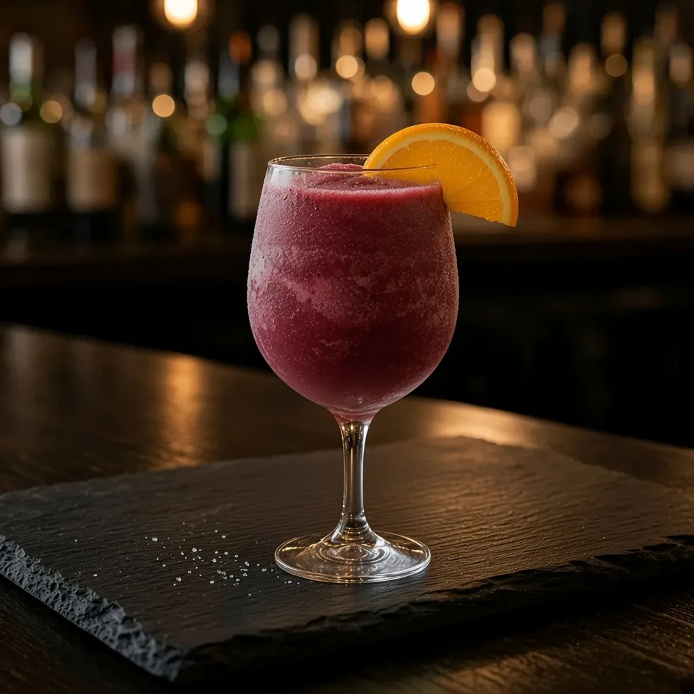
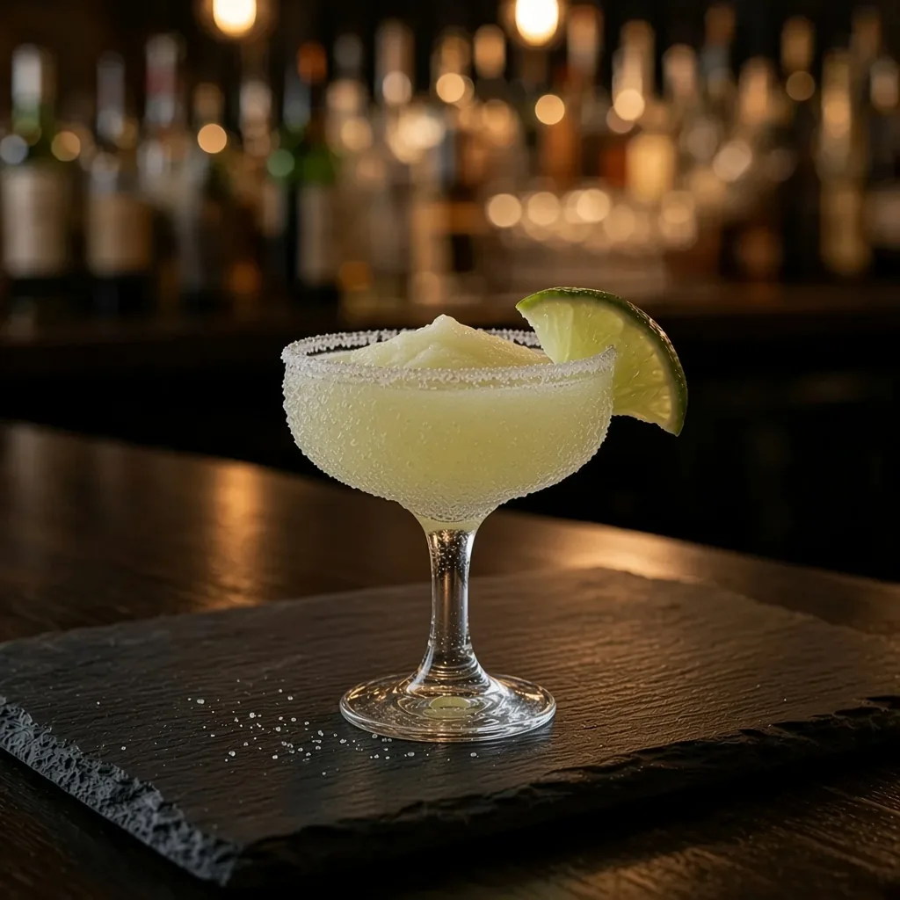
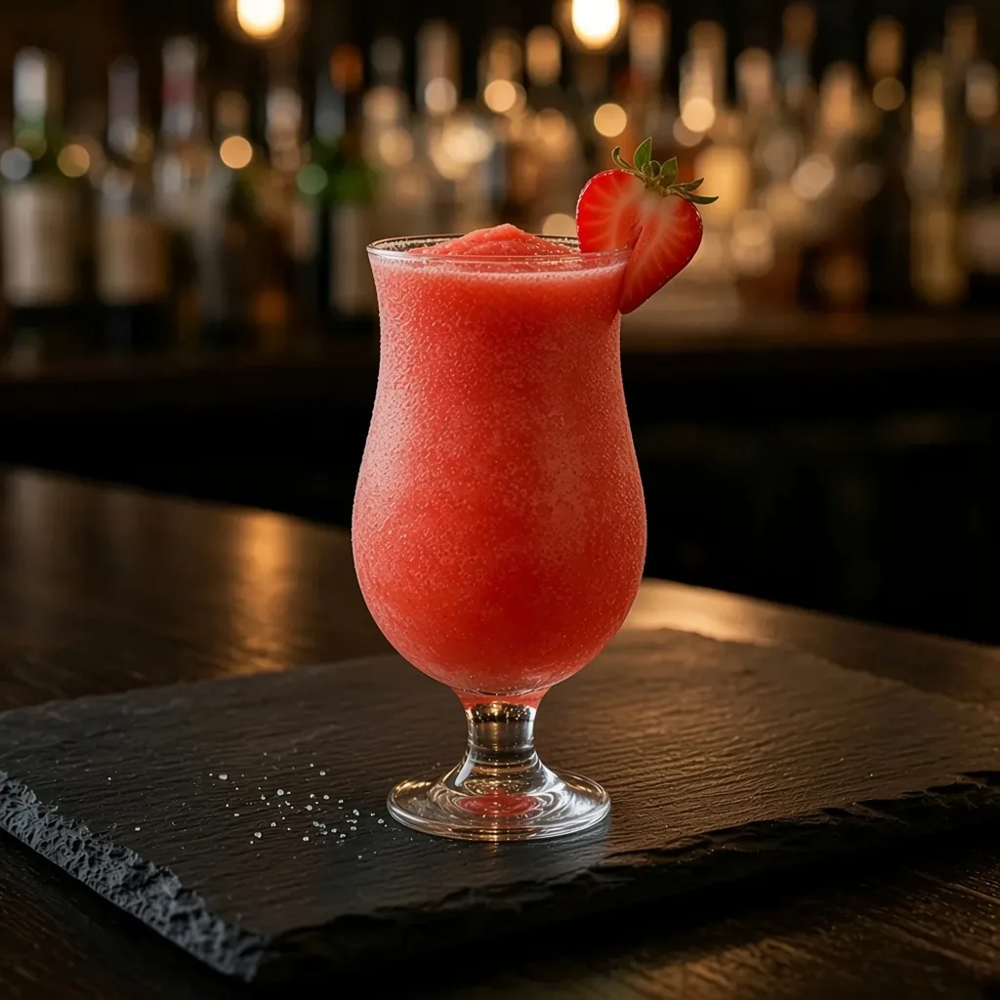
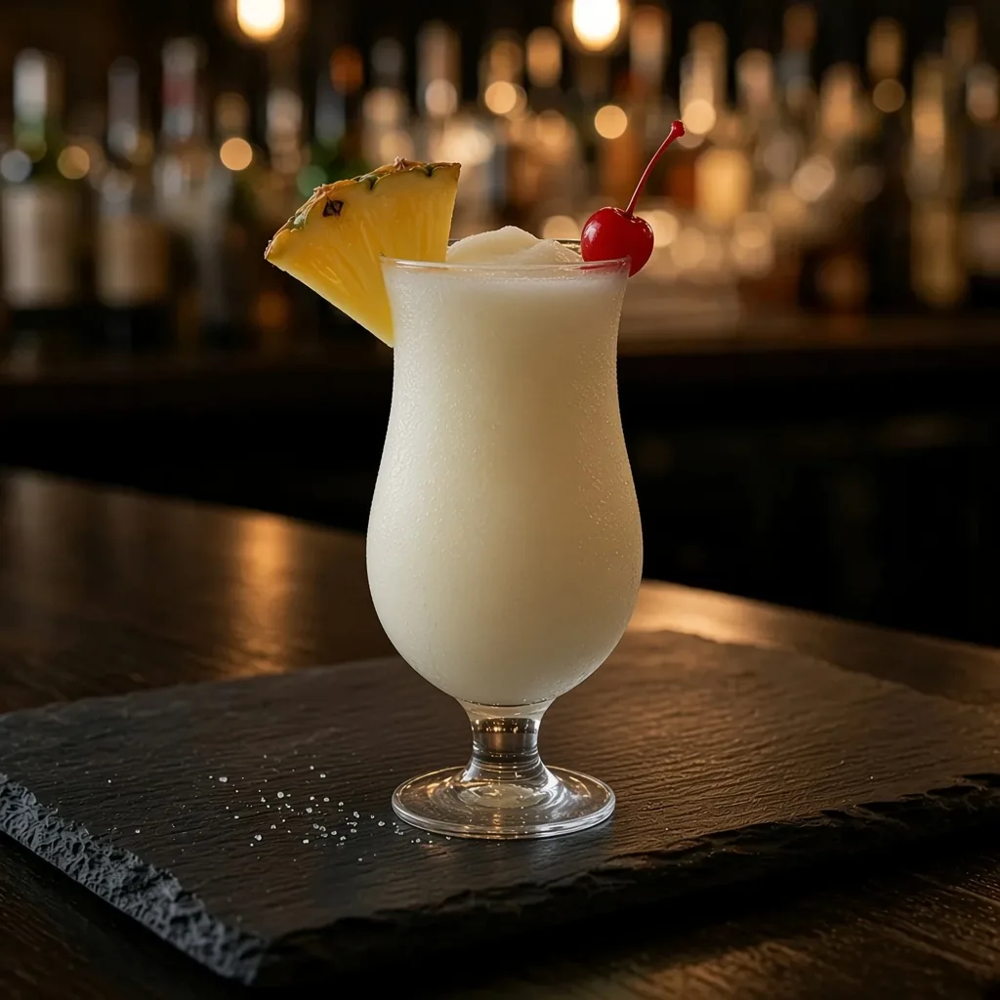
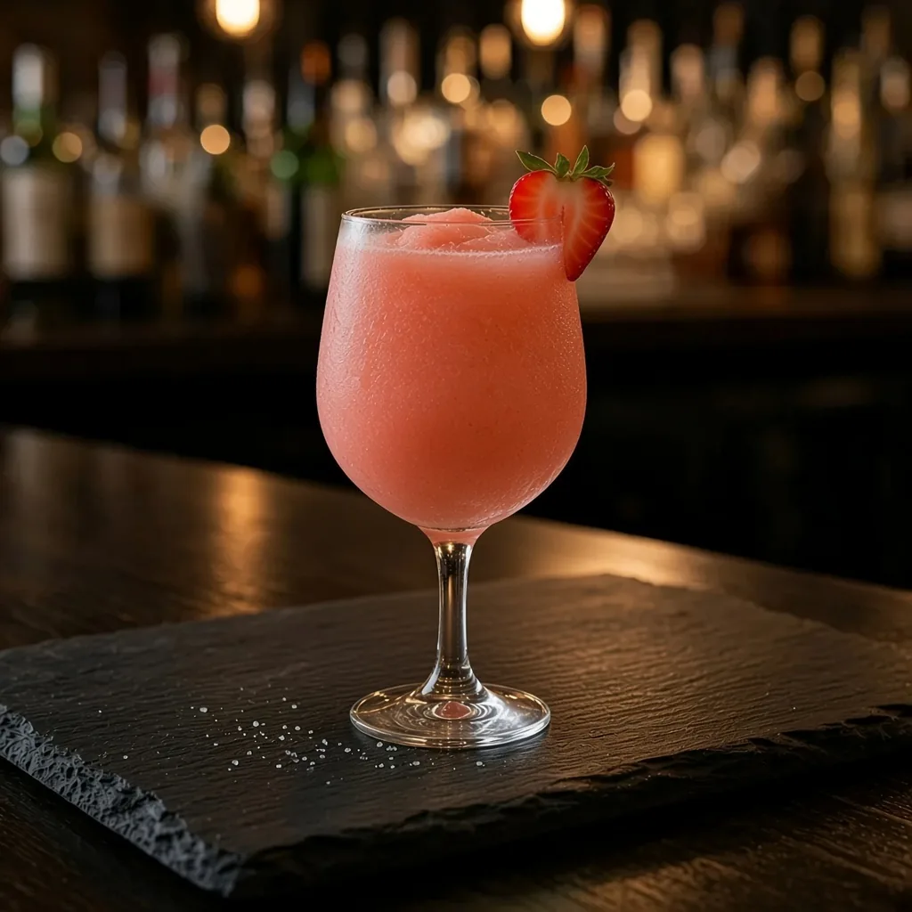

Home / Drinks / Frozen drinks
Frozen Sangria
Red wine blended with frozen berries. No waiting overnight.

Home / Drinks / Frozen drinks
Red wine blended with frozen berries. No waiting overnight.

Use 2 cups red grape juice in place of the wine and leave out the brandy.
Pour it, then start a room. Drinking is optional in every game.

Frozen MargaritaThe blender version of the classic: tequila, lime and orange liqueur as a slush.
Strawberry DaiquiriRum, lime and frozen strawberries. Bright red and thick enough for a straw.
Piña ColadaRum, pineapple and cream of coconut, blended thick.
FroséFrozen rosé blended with strawberries. Freeze the wine the night before.